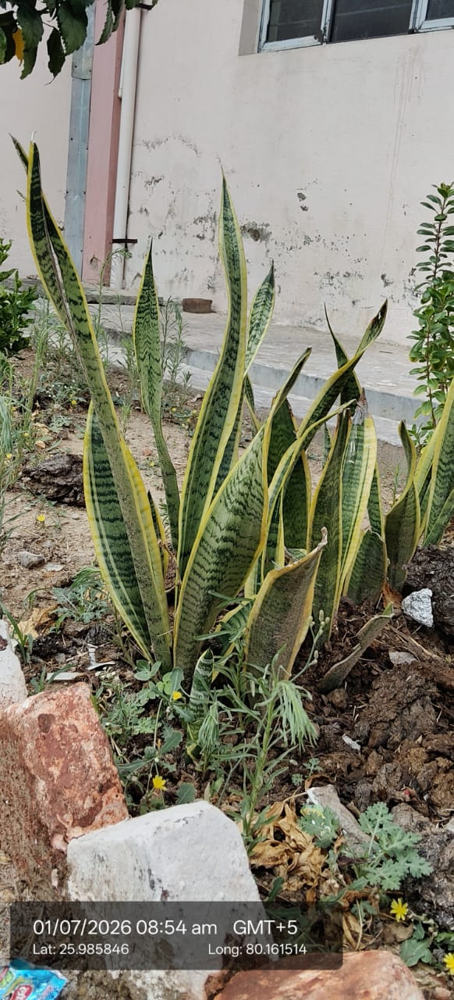

Visual record01 photographs

| Scientific name | Dracaena trifasciata 'Laurentii' (older name: Sansevieria trifasciata 'Laurentii') |
|---|---|
| Type | Perennial evergreen herbaceous succulent |
| Category | Herbs |
Habitat & Growing Conditions
- Native to West Africa, from Nigeria to Congo
- Widely grown outdoors and indoors across India, including UP
- Thrives in hot, dry climates. Tolerates full sun to shade, though leaf color is best in bright, indirect light
- Prefers sandy, well-drained, poor soil. Very drought tolerant
- Does great in Kanpur’s conditions. Sensitive to frost and waterlogging
- Often used as a border plant in gardens and as a potted plant
Economic Importance
- Ornamental: One of the most popular low-maintenance plants worldwide. The yellow margins make 'Laurentii' a top-selling variety
- Air purifier: NASA Clean Air Study found it removes benzene, formaldehyde, xylene, and toluene. Releases oxygen at night, so good for bedrooms
- Fiber: Historically, strong leaf fibers used for making ropes, bowstrings, and mats
Medicinal Importance
- In traditional medicine, used for earache, skin wounds, and as an antiseptic. Note: Leaves are mildly toxic if eaten by pets or kids. Consult a healthcare professional before any medicinal use
- Commercial: Major nursery trade plant. Propagated easily by division and leaf cuttings
- Vastu/Feng Shui: Considered auspicious. Believed to bring positive energy and absorb toxins